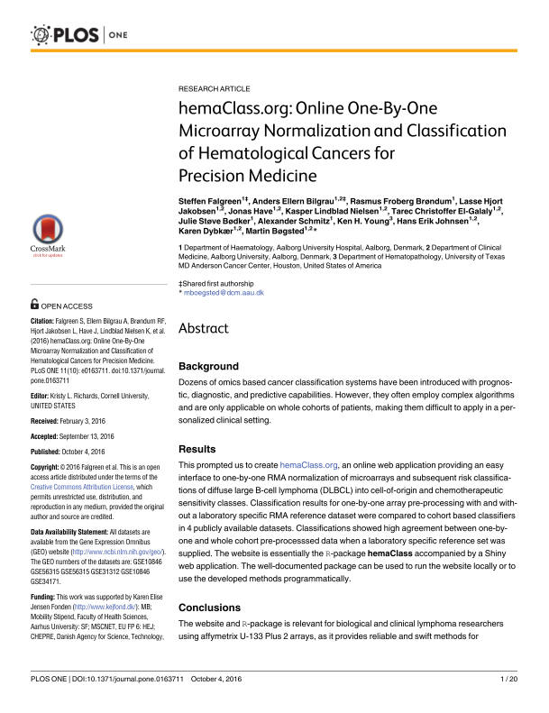

<div class="container" style="max-width:100%">
  <div class="content" style="max-width:100%; word-wrap: break-word">
    <h1>Main papers</h1>
    <p>These are papers which have relevance to hemaClass or to the classification schemes available through hemaClass.</p> <br>
    <h3>hemaClass</h3>
    In order to cite hemaClass.org you may cite the following article as in preparation:
    <table width=100% border="0">
      <tr>
        <td width=20%><a href="http://www.blodet.dk" target="new"></a></a>
        </td>
        
        <td width=80% valign="top">
        <em><h4>Hemaclass.org: An online based diffuse large B-cell lymphoma classification tool</h4></em>

        <p>Steffen Falgreen, Anders Ellern Bilgrau, Lasse Hjorth Jakobsen, Jonas Have, Kasper Lindblad Nielsen, Tarec Christoffer El-Galaly, Julie Støve  Bødker, Alexander Schmitz, Hans Erik Johnsen, Karen Dybkær, and Martin Bøgsted</p></td>
      </tr>
    </table>


    <h3>B-cell associated signatures</h3>
    
    <table width=100% border="0">
      <tr>
        <td width=20%><a href="http://jco.ascopubs.org/content/early/2015/03/23/JCO.2014.57.7080.abstract" target="new"></a></a>
        </td>
        
        <td width=80% valign="top">
        <em><h4>A diffuse large B-cell lymphoma classification system that associates normal B-cell subset phenotypes with prognosis</h4></em>
        <p>*Karen Dybkær, *Martin Bøgsted, Steffen Falgreen, Julie S. Bødker, Malene K. Kjeldsen, Alexander Schmitz, Anders E. Bilgrau, Zijun Y. Xu-Monette, Ling Li, Kim S. Bergkvist, Maria B. Laursen, Maria Rodrigo-Domingo, Sara C. Marques, Sophie B. Rasmussen, Mette Nyegaard, Michael Gaihede, Michael B. Møller, Richard J. Samworth, Rajen D. Shah, Preben Johansen, Tarec C. El-Galaly, Ken H. Young, and Hans E. Johnsen *Shared first authorship<br /><br />
Published in Journal of Clinical Oncology April 20, 2015, vol. 33, no. 12, p. 1379-1388
        </p>
        </td>
      </tr>
    </table>

<h3>Resistance Gene Signatures</h3>
    
    <table width=100% border="0">
      <tr>
        <td width=20%><a href="http://www.biomedcentral.com/1471-2407/15/235" target="new"></a></a>
        </td>
        
        <td width=80% valign="top">
        <em><h4>Predicting response to multidrug regimens in cancer patients using cell line experiments and regularised regression models</h4></em>
        <p>Steffen Falgreen, Karen Dybkær, Ken H. Young, Zijun Y. Xu-Monette, Tarec C. El-Galaly, Maria Bach Laursen, Julie S. Bødker, Malene K. Kjeldsen, Alexander Schmitz, Mette Nyegaard, Hans Erik Johnsen, and Martin Bøgsted145<br /><br />
Published in BMC Cancer 2015, 15:235 (8 April 2015)
        </p>
        </td>
      </tr>
    </table>
  
  </div>
  <!-- end .container --></div>
  
</body>
